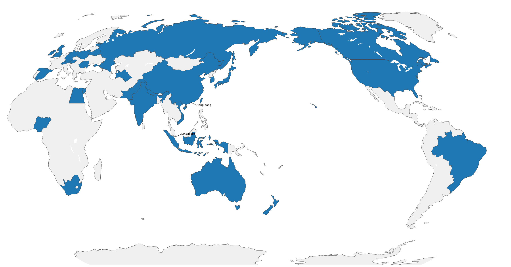
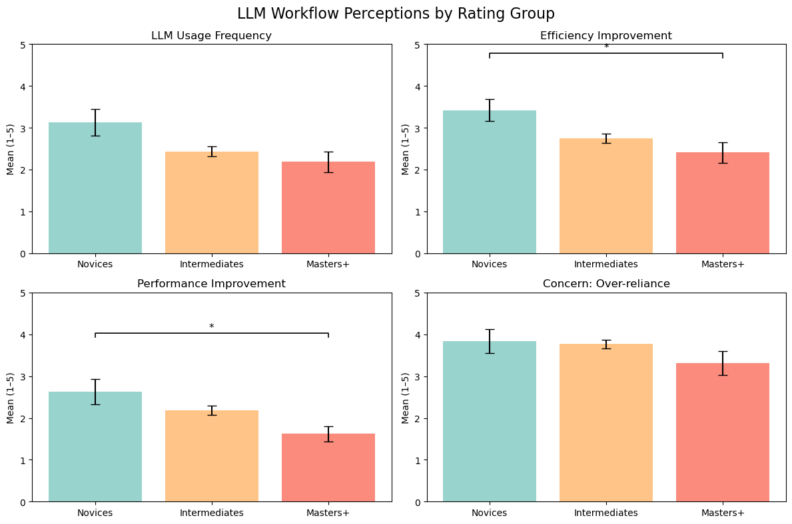
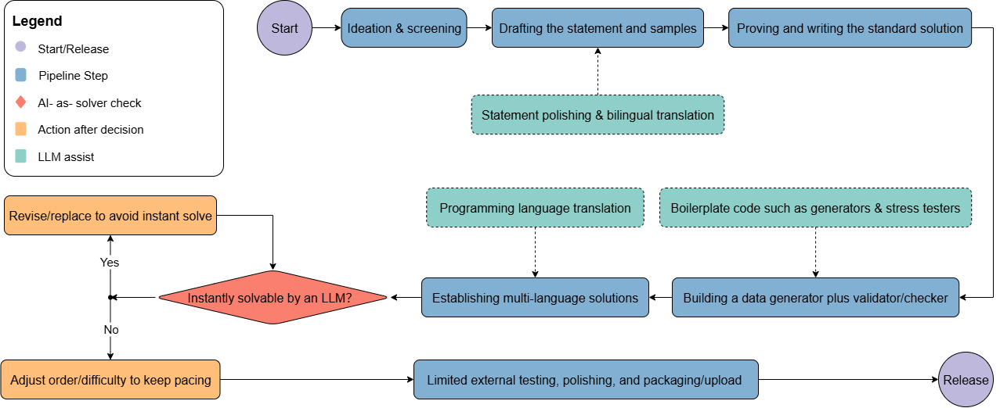
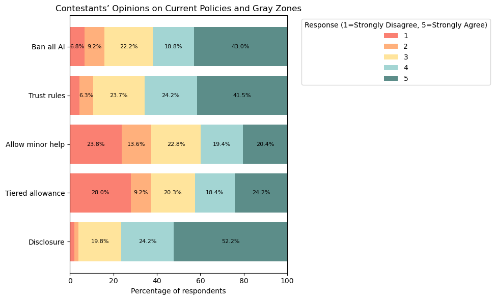
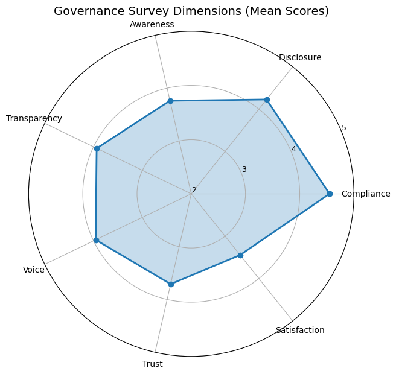
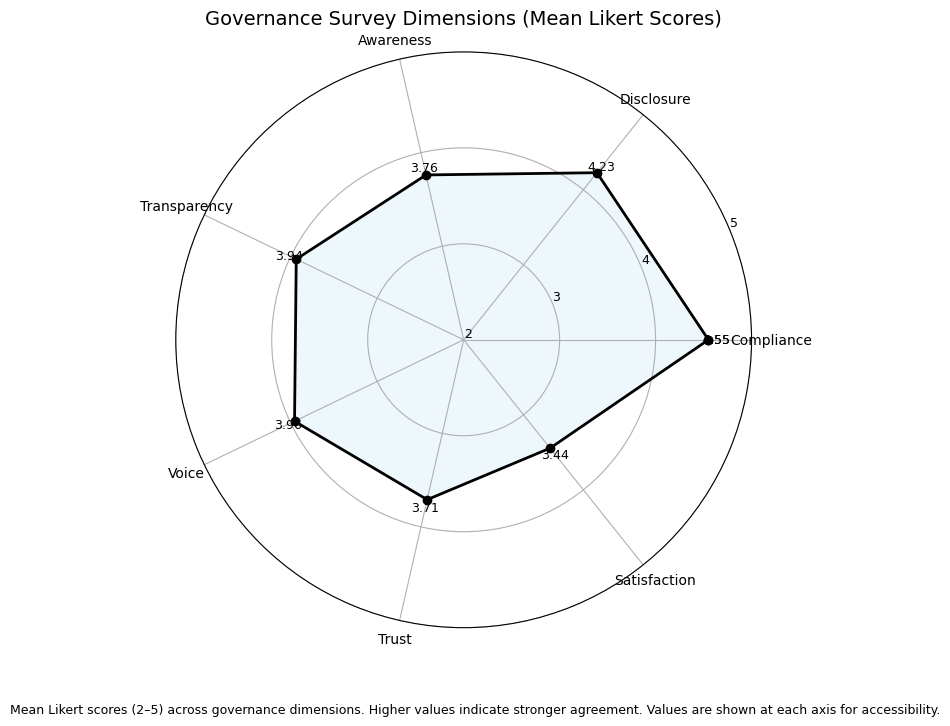

FAIR: Framing AI's Role in Programming Competitions
Understanding How LLMs Are Changing the Game in Competitive Programming
Understanding How LLMs Are Changing the Game in Competitive Programming
FAIR studies how LLMs are changing competitive programming as a sociotechnical system rather than only as a benchmark leaderboard. The paper combines 37 cross-role interviews, a global survey of 207 contestants, and large-scale contest-log analysis to answer three linked questions: workflow change, fairness boundaries, and governance adaptation.
The central argument is that the key challenge is no longer whether AI is used, but where communities draw enforceable boundaries between legitimate assistance and misconduct, and how platforms can preserve credibility under imperfect detection.
FAIR is organized around three RQs:
RQ1 (Workflow): How LLMs reshape workflows of contestants, problem setters, coaches, and platform stewards.
RQ2 (Fairness): How stakeholders negotiate acceptable assistance vs. cheating.
RQ3 (Governance): How platforms and communities co-evolve rules, detection, and accountability.
Main contributions: (1) cross-role empirical evidence of workflow transition, (2) gray-zone mapping of fairness conflicts, and (3) a chess-inspired layered governance approach for AI-era contests.
The study uses qualitative-first triangulation with quantitative support:
Interviews: 37 unique stakeholders (21 contestants, 7 setters, 7 coaches, 8 stewards), spanning novices to ICPC/IOI world champions.
Survey: 207 valid global responses; reliability checks report Cronbach's alpha = 0.76, KMO = 0.80, Bartlett chi-square = 1788.27 (p < .001).
Platform logs: 336 rated Codeforces contests (2022-2025), 4,844,702 participation instances, and 64,277,033 submissions.
This mixed design is important because self-reports reveal norms and reasoning, while platform traces reveal behavior shifts that sanctions alone may miss.

Global survey coverage for 207 respondents across major competitive programming regions.
FAIR shows role-dependent adoption instead of a single “AI takeover” pattern.
Contestants: pre-contest and in-contest use remains low (regular-use mean = 2.31/5; preparation change mean = 2.32/5), while post-contest and training use is clearly higher (daily-use mean = 2.48/5).
Skill gradient: novices report larger efficiency/performance gains than Masters+, and usage is negatively correlated with rating (rho = -0.227, p = .001).
Problem setters: LLMs are accepted in low-creativity steps (translation, boilerplate, stress-testing, solver checks), but ideation remains human-controlled.
Coaches: teaching core changes little, but selection/integrity screening becomes stricter.
Stewards: work shifts toward monitoring and triaging AI-related reports, increasing moderation burden.

Novices perceive stronger efficiency/performance benefit; concern about over-reliance remains high across all groups.

Setter pipeline shows selective integration: LLM assistance in repetitive phases, human judgment in originality-critical phases.
The paper finds strong normative consensus at the extremes, and sharp disagreement in the middle.
Consensus: using AI during official contests is widely seen as cheating (mean = 4.56/5; 89% agree/strongly agree), and as conferring unfair advantage (mean = 4.45/5; 86%).
Gray zones: translation and light autocomplete are often tolerated; pre-submission AI checking and conceptual hint outsourcing are broadly condemned.
Policy tension: ban-all and disclosure receive high support, but “minor help” and tiered allowance are polarized.
Interview evidence further reveals hidden misuse workflows (batch prompting, laundering, off-platform distribution), explaining why policy text and on-the-ground reality diverge.

Fairness attitudes: strong anti-cheating baseline plus persistent disagreement on bounded assistance scenarios.
FAIR identifies a governance paradox: high willingness to comply, but lower confidence in enforcement.
Compliance: mean = 4.55/5 (87.9% willing to follow rules).
Disclosure support: mean = 4.23/5 (76.3%).
Trust: only about 61% trust fair enforcement (mean = 3.71), and about 51% are satisfied with current handling (mean = 3.44).
Platform evidence: severe sanctions stay low (about 2-3% in Div3/4, 1.8% in Div2, 0.18% in Div1), with no post-policy spike after September 14, 2024.
Meanwhile, behavioral proxies (Python share and extremely regular solve-interval CV patterns) increase after policy rollout, suggesting broader tool-mediated behavior than formal sanctions capture.


Governance dimensions expose the compliance-trust gap: rule acceptance is stronger than confidence in enforceability and quality of handling.
FAIR positions competitive programming at the intersection of three governance logics: education (learning integrity), competition (ranking legitimacy), and creative production (authorship/disclosure norms). This hybrid identity explains why one-dimensional policy imports fail.
The paper therefore proposes a chess-inspired layered approach: rating-linked anomaly detection, expert review for borderline cases, structured community reporting, and proportional sanctions with process transparency.
The broader implication is practical: when perfect prevention is impossible, legitimacy depends on explainable procedures, low false-positive risk, and credible appeal paths.
FAIR explicitly notes sample imbalance (gender/region), absence of direct interviews with Codeforces stewards, social-desirability bias in self-reporting, and imperfect proxy validity in large-scale behavioral indicators.
Future work should expand underrepresented populations, combine ethnographic and social-media evidence, and build longitudinal instrumentation to separate general ecosystem drift from AI-specific effects.